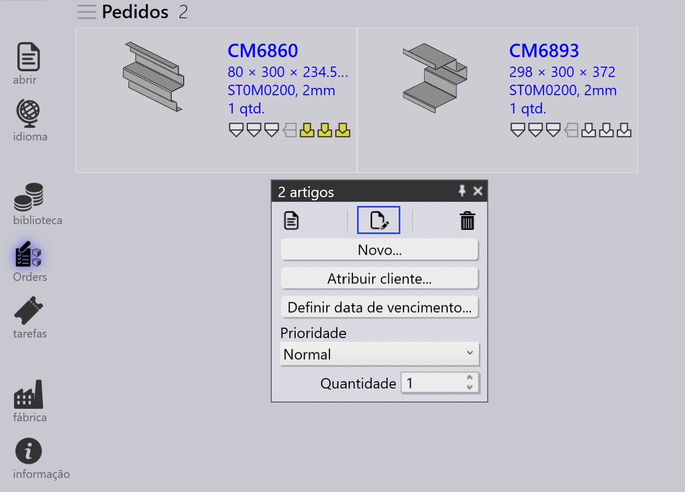
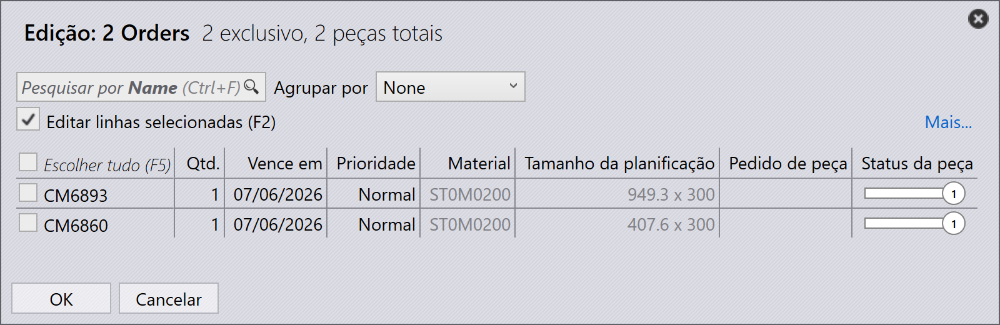
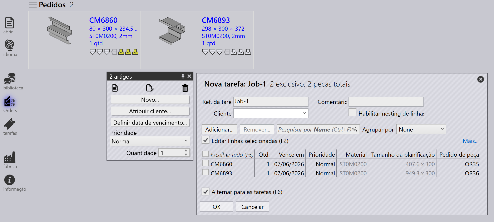
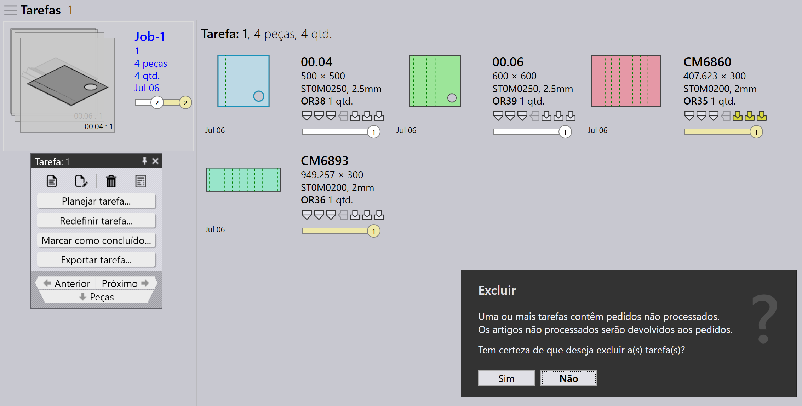

Pedidos
Um pedido define quais peças precisam ser fabricadas, em qual quantidade e até quando. Ele direciona o planejamento e a execução de produção no TruSmartCAM. Pedidos podem ser criados ou importados usando vários métodos e podem ser convertidos em tarefas para o planejamento de produção.
Painel de pedido

|
|


Editar pedidos
Selecione um ou mais pedidos e clique com o botão direito para modificar detalhes comuns do pedido como quantidade, data de entrega, prioridade e informações do cliente.
Se múltiplos pedidos selecionados requerem valores diferentes, use a opção Check-out for Editing para editar cada pedido individualmente conforme a necessidade.


Quaisquer atualizações feitas nos pedidos são aplicadas imediatamente ao banco de dados. Use o comando Delete para remover pedidos da biblioteca de pedidos.
| O comando Delete remove apenas os pedidos. Peças vinculadas aos respectivos pedidos não são excluídas da Biblioteca de Peças. |
Planejamento de pedidos
Selecione um ou mais pedidos, clique com o botão direito e clique em New… → Job para converter os pedidos selecionados em tarefas. Use as opções de Classificar e Filtrar para agrupar pedidos relevantes antes da criação da tarefa.

Uma vez que os pedidos são convertidos em uma tarefa:
-
A tarefa é movida para a página Tarefas
-
Os pedidos são removidos da lista de Pedidos
-
O fluxo de trabalho padrão de planejamento de tarefa pode então ser usado para o planejamento de produção e nesting

Para mais informações sobre o fluxo de trabalho de planejamento de tarefa, consulte Plano Automático
Informações adicionais
-
Se uma tarefa contendo pedidos for excluída, os pedidos associados são automaticamente movidos de volta para a página Orders Ready, a menos que a tarefa ou peça esteja marcada como Completed.

-
Pedidos podem ser adicionados ou removidos de uma tarefa existente através da janela Edit Job com base nos requisitos de produção.